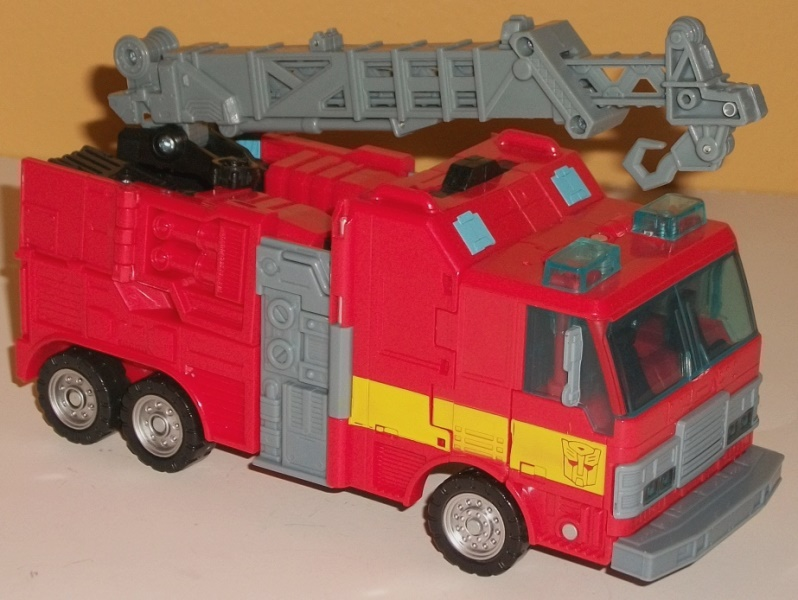

Size : Deluxe
Difficulty of Transformation : Hard
Color Scheme : White, moderately dark blue, and some black, light orangish red, silver, and transparent light blue
Individual Rating : 6.0
Allegiances
: Autobot
Set Price
: $33 (U.S.)
(NOTE: Because this set is composed of repaints,
this is not a full-blown review. This mainly covers any changes made to
the set and the color scheme, and merely compares it to the original versions
of these molds. For a review on RotF Blazemaster-- the mold used for Blades--go
here
.
For a review on Universe 2.0 Inferno-- the mold used for Hot Spot--go
here
.)
 Blades
Blades
Size
: Deluxe
Difficulty of Transformation
: Hard
Color Scheme
: White, moderately
dark blue, and some black, light orangish red, silver, and transparent
light blue
Individual Rating
: 6.0
Well, Hasbro's digging
unexpectedly far back for this 2-pack, aren't they?
Revenge of the Fallen
Blazemaster, really? Well, anyways, this time around the mold has been
done up in a deco job fitting a rescue helicopter, with the primary colors
being white, dark blue, and a light red that has just a tinge of orange
in it. All three colors go together very well-- after all, they're pretty
standard rescue vehicle colors, and putting them on a small helicopter
mode certainly works. They particularly go together nicely in vehicle mode,
where the dark blue lines across the middle and the light orangish red
lines across the bottom help to break up the white, with the dark blue
back end also working in nice contrast to the front end. The light transparent
blue used for the windows is a nice shade of the color, and complements
the darker blue plastic nicely. There's also a bit of silver on the robot
mouth and the sides of the vehicle mode below the black rotor, but against
pure white plastic like they are, they blend in a bit; I wish a bit darker
a shade of the color had been used. In robot mode, the big issue here is
that much of the coloration from vehicle mode is either folded up on the
sides or on the back; particularly from a frontal view, Blades has way
too much white, particularly on his upper body and arms where the stripes
from the vehicle mode aren't really present/obvious. As such, he ends up
looking really dull (as well as having just a bad-looking robot mode, but
that's the mold's fault). Another-- in my opinion, more minor-- issue is
that
these aren't G1 Blades' colors
. G1 Protectobot Blades was mostly
red with some white accents; white was not his dominant color at all, to
say nothing of the blue.
No mold changes have
been made to this version of Blades.
 Hot
Spot
Hot
Spot

Size
: Voyager
Difficulty of Transformation
: Medium
Color Scheme
: Light red, bluish
gray, black, and some silver, light sky blue, transparent light sky blue,
and yellow
Individual Rating
: 8.9
This mold was actually
already done up as the
G1 Protectobot Hot Spot
,
so having it done up again in the same colors would be rather pointless.
Thus, it appears that this version's color scheme is loosely based on the
unreleased G2 Hot Spot's color scheme, taking a more traditional tack to
a fire truck's color scheme what with being mostly light red and gray.
The gray plastic has a slight blue tint to it, which actually helps it
contrast against the light red; I dig it, and you won't hear me say that
about gray often. There's also the requisite amount of black on things
like the fists and wheels, and a fair amount of silver on appropriate parts
like the wheel hubs and robot face. What really makes this color scheme,
though, are two things: first, the yellow stripes along the sides of the
vehicle mode/chest, with Autobot symbols imprinted in said stripes at the
front; it helps to add another color that fits in the red area of the color
wheel, but contrasts against it a bit at the same time. I also really like
the light blue paint apps on his shoulders, lower legs, and arm panels,
and not just because they tie Hot Spot to his G1 namesake a bit; they look
really, REALLY nice against the light red, providing some contrast while
still keeping the overall color scheme light. The transparent plastic is
also of pretty much the same hue, and similiarly looks nice.
Although this version
of Hot Spot doesn't have any mold changes unique to this release, he does
have some mold changes that were made to previous releases of this mold.
And it's here that Hot Spot gets a big question mark-- he has
Solar
Storm Grappel's
crane, instead of, y'know, what a fire truck would
have. He also has that release's head, though he keeps Universe 2.0 Inferno's
lower arms. So he has Grappel's head, despite there already existing a
head sculpt for this mold
specifically for this character
. Oooookay....
The Protectobots Evac Squad pack is a bit of a hard sell, even at its discount price, what with actual combining Protectobots released less than a year later after these guys, and what with both of the toys in this 2-pack not resembling their original selves much beyond the general alt mode. Blades also is redecoed from a just plain bad mold. That said, if you don't have either of these molds, like more complex transformations, and just want the toys for themselves and not representative of the actual G1 characters themselves, this is a mild recommendation, if for nothing else than Hot Spot. I mean, with the price, you're nearly getting Blades free, what with rising labor and part costs...
Reviews by Beastbot